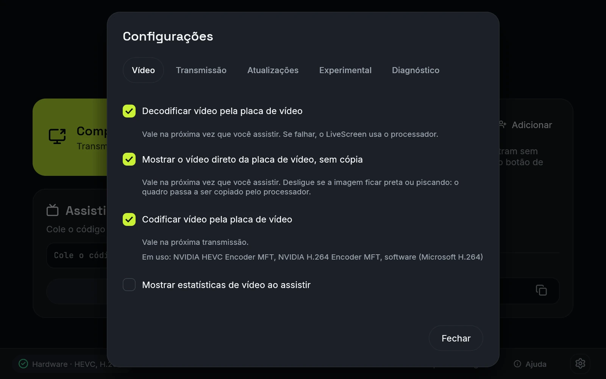

Ajuda
Tudo o que não coube na página inicial.
Requisitos
- Host (quem transmite): Windows 10 versão 2004 ou superior, 64 bits.
- Viewer (quem assiste): Windows 10 2004+ x64, ou o navegador (Chrome, Edge, Firefox ou Safari, pelo link gerado com “Copiar link do navegador” durante a transmissão). O link do navegador não usa servidor de retransmissão (sem TURN): conecta direto por IPv6 ou IPv4, e o PC avisa quando uma VPN é a rota padrão.
Versões
Hosts 0.5 a 0.7 aceitam viewers 0.5 a 0.7 (protocolo 5). Viewers 0.5 a 0.7 conectam também a hosts 0.4 (protocolo 4). Com protocolos incompatíveis a conexão é recusada (veja Solução de problemas). O chat exige host e viewer 0.6 ou superior; com uma ponta mais antiga a transmissão funciona normalmente, só sem chat (o botão não aparece). O número do protocolo continua 5. No navegador, a página é sempre a mais nova: abre os links .v3 dos hosts 0.7 (com sinalização híbrida pós-quântica) e continua abrindo os links .v2 e mais antigos dos hosts 0.6 e anteriores. Hosts 0.7 só aceitam espectadores .v3.
| Quem transmite | Quem assiste | Conecta? |
|---|---|---|
0.5 |
0.5 (desktop) |
Sim |
0.4 |
0.5 ou 0.6 (desktop) |
Sim, com convite sem chave de sala (sem chat) |
0.5 |
0.4 |
Não: atualize quem assiste |
0.6 |
0.6 (desktop ou navegador) |
Sim, com chat |
0.6 |
0.5 (desktop) |
Sim, sem chat |
0.5 |
0.6 (desktop) |
Sim, sem chat |
0.7 |
navegador |
Sim, com link .v3 e sinalização híbrida pós-quântica (hosts 0.7 só aceitam .v3; a página continua abrindo links .v2 e anteriores de hosts 0.6 e anteriores) |
0.6.2 |
navegador |
Sim, com chat, menu Qualidade e sinalização cifrada (link termina em .v2) |
0.6.1 |
navegador |
Sim, com chat, menu Qualidade e pausa do vídeo com a aba escondida |
0.6.0 |
navegador |
Sim, com chat, sem menu Qualidade |
Download e atualização
Baixe o livescreen.exe (ou o .zip) em Releases. Não precisa instalar: é só abrir.
Ao abrir, o app verifica se há versão nova. Se houver, aparece o botão Atualizar para a versão X no rodapé da tela inicial. Ele:
- baixa a assinatura
livescreen.exe.sige olivescreen.exeda release; - confere o sha256 publicado pelo GitHub;
- confere a assinatura Ed25519 da release (feita fora do GitHub) sobre a versão e o sha256, com a chave pública embutida no app; sem assinatura válida a release é ignorada;
- troca o executável e reabre o app.
A conferência da assinatura vale a partir da 0.6.2: quem está na 0.6.1 ou antes recebe a 0.6.2 conferindo só o sha256.
Para atualizar, o executável precisa estar numa pasta com permissão de escrita (fora de Program Files, por exemplo).
Configurações
Abra pela engrenagem em qualquer tela ou com Ctrl+,. Tudo fica em ui.json.

Vídeo
-
Decodificar vídeo pela placa de vídeo
Vale na próxima vez que você assistir. Se falhar, o LiveScreen usa o processador.
-
Mostrar o vídeo direto da placa de vídeo, sem cópia
Vale na próxima vez que você assistir. Desligue se a imagem ficar preta ou piscando: o quadro passa a ser copiado pelo processador.
-
Codificar vídeo pela placa de vídeo
Vale na próxima transmissão.
- Mostrar estatísticas de vídeo ao assistir
Transmissão
- Qualidade padrão
- Transmitir áudio
- Transmitir microfone
-
Baixar a qualidade sozinho quando o PC não der conta
Vale na hora, inclusive com a transmissão no ar. Só reduz; para subir, escolha a qualidade.
-
Aceitar pedidos de qualidade mais leve de quem assiste
Desligado, os pedidos só aparecem como aviso.
- Limite da sala
-
Seu nome
Como você aparece para quem compartilha
-
A qualidade e o áudio também mudam quando você escolhe ao iniciar uma transmissão.
Atualizações
-
Procurar atualizações ao abrir o LiveScreen
Versão instalada
Experimental
Recursos em teste: podem mudar ou sumir em qualquer versão.
-
Doações simuladas no chat
Função só para teste, sem utilidade real: quem assiste pelo PC ou pelo navegador manda moedas de mentira junto com a mensagem; nenhum dinheiro de verdade. Vale na próxima transmissão.
Diagnóstico
- Abrir pasta de logs
- Usar Windows Graphics Capture (necessário para compartilhar janelas)
-
Usar Desktop Duplication (DXGI) como alternativa para telas
Vale na próxima transmissão.
Qualidade pelo espectador
Quem assiste (no app ou no navegador, com host 0.6.1 ou mais novo) pode pedir ao host uma qualidade mais leve (menu “Qualidade”), inclusive as faixas 240p 30, 360p 30 e 480p 15 (hosts mais antigos, que não conhecem essas faixas, recebem 480p 30). O host só aplica se o stream de fato ficar mais leve (largura, altura, fps e bitrate não sobem), no máximo um pedido a cada 5 s, e vale para a sala toda. O host pode desligar os pedidos em Configurações (“Aceitar pedidos de qualidade mais leve de quem assiste”); desligado, eles só aparecem como aviso.
Android (descontinuado)
O app Android foi descontinuado e saiu do repositório: não há APK novo nem atualização. Quem já tem o app instalado continua assistindo hosts desktop (o protocolo é o mesmo). No celular, assista pelo link do navegador.
Arquivos em %APPDATA%\LiveScreen\ e config.json
ui.json: preferências (qualidade, áudio, microfone, nome, volume e mudo, limite da sala, posição da janela, decodificação/codificação por hardware, vídeo sem cópia, estatísticas, baixar a qualidade sozinho, pedidos de qualidade, atualização, backends de captura e recursos experimentais).livescreen.log: registro para diagnóstico.identity.key: a identidade do PC, que os amigos usam para te reconhecer. Apagar cria outra identidade e os amigos precisam te adicionar de novo.identity.lockimpede que duas janelas usem a mesma identidade: a segunda janela abre sem amigos.friends.json: sua lista de amigos. Um arquivo ilegível (este ou oidentity.key) nunca é sobrescrito: vira.bad.-
config.json(opcional): desliga partes da captura ou do encoder para contornar problemas de driver:{ "capture_overrides": ["deny-hardware-encoder"] }Valores aceitos:
deny-graphics-capturedeny-dxgideny-hardware-encoderdeny-hardware-decoderdeny-zero-copy(o viewer volta a ler o quadro pela CPU em vez de compartilhar a textura com a placa de vídeo; o overlay de estatísticas mostrasem cópiaoucópia via CPU)
A variável de ambiente
LIVESCREEN_CAPTURE_OVERRIDES(valores separados por vírgula) substitui o arquivo. O que o arquivo ou a variável desligam não pode ser religado em Configurações. A janela usa o backend DX12 do wgpu;WGPU_BACKENDtroca o backend e, fora do DX12, o viewer usa a cópia via CPU.
Diagnóstico pela linha de comando
O .exe é um app de janela: para ver a saída, redirecione, ex.: livescreen.exe --probe-encoder | Out-String no PowerShell ou | more no cmd.
-
livescreen.exe --probe-encoderTesta os encoders de placa e imprime o que funcionou.
-
livescreen.exe --selftest-captureCaptura a tela principal por 3 s com cada backend e conta os quadros.
Solução de problemas
Aparece Via servidor e o vídeo trava
O servidor de retransmissão padrão é a infraestrutura pública e gratuita da n0 (equipe do iroh), compartilhada com outros apps e com limite de taxa. Quando alguém aparece como Via servidor, qualidades altas podem travar: baixe a qualidade da transmissão ou peça uma mais leve no menu Qualidade de quem assiste. Isso só vale para o app; quem assiste pelo navegador nunca passa pelo servidor.
Recusado: sala cheia
Quem transmite pode aumentar o limite da sala durante a transmissão na janela do app.
“LiveScreen desatualizado” ou “Versão incompatível”
Quem transmite e quem assiste usam protocolos diferentes. Atualize o lado indicado na mensagem, ou os dois, para a mesma versão (veja Versões). A mesma mensagem aparece quando o código de convite foi colado incompleto.
O link do navegador não conecta
O navegador não usa servidor de retransmissão: a conexão com o PC precisa ser direta. A página explica quando a rede bloqueia (comum em 4G e redes de empresa ou escola). Tente trocar entre Wi-Fi e dados móveis ou desligar a VPN; quem transmite pode liberar o LiveScreen no firewall do Windows. Se uma VPN for a rota padrão do PC, o app avisa na tela da transmissão e o link também tenta pela placa de rede física.
Mensagens ao entrar pelo navegador ou com convite
- Convite inválido ou substituído: quem transmite removeu alguém ou gerou um novo convite, e o código e o link anteriores deixaram de valer. Peça os novos. Aparece no app e no navegador.
- “O convite foi trocado ou não é de quem transmite”: a chave pública ou a impressão do link não conferem com quem transmite (o link foi alterado, o host gerou novo convite ou a transmissão foi reiniciada). Peça o link novo. Em transmissões de hosts 0.6, mensagens de link antigo ou chave incorreta também indicam pedir o link novo.
- “Quem transmite não respondeu”: o host não enviou a chave de sinalização em 10 segundos. Confira se a transmissão ainda está no ar e se quem transmite continua conectado.
- “Este navegador não consegue abrir a transmissão com segurança”: o navegador não carregou a criptografia da página (WebCrypto ou os scripts de
/v/). Abra o link no Chrome, Edge, Firefox ou Safari atualizados. - “Falha ao conferir a página do espectador” (no host): ao clicar em “Copiar link do navegador”, o app confere a assinatura da página web contra o manifesto oficial assinado. Se a verificação falhar (falha de rede ou arquivo divergente), tente de novo em instantes; se persistir, atualize o LiveScreen.
- “Não deu para copiar com proteção” (no host): a cópia segura para a área de transferência (que evita gravar o link no histórico do
Win+Vou na nuvem) falhou no Windows. Tente clicar em copiar novamente. - Oferta repetida: recarregue a página.
- Muitas entradas com este convite: peça a quem transmite um convite novo (botão Novo convite).
O botão Atualizar não funciona
Para conseguir substituir o executável durante a atualização automática, o aplicativo precisa estar numa pasta com permissão de escrita (fora de Program Files, por exemplo).
O PC não dá conta da qualidade
Deixe “Baixar a qualidade sozinho quando o PC não der conta” ligado nas Configurações (padrão) ou escolha uma qualidade menor.
Vídeo preto ou erro da placa de vídeo
Use os seletores deny-hardware-encoder, deny-hardware-decoder e deny-zero-copy em config.json (veja a seção Arquivos) ou desmarque “Mostrar o vídeo direto da placa de vídeo, sem cópia” nas Configurações.
Reportar um problema
Abra uma issue em GitHub Issues e anexe o arquivo %APPDATA%\LiveScreen\livescreen.log.